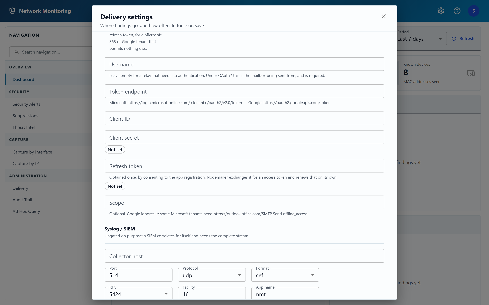

Email over OAuth2
For a Microsoft 365 or Google tenant that will not accept a password.
Microsoft 365 and Google both disable basic SMTP authentication by default on modern
tenants. The first thing most people try — point it at our company mailbox —
therefore fails, and fails with a 535 that is indistinguishable from a typo
in the password. Setting Authentication to
oauth2 is the answer where a relay is not available.

Before you start
This uses the refresh-token grant: you register an application with your identity provider, consent to it once as the sending mailbox, and paste the resulting refresh token here. The application exchanges it for an access token when it first sends, and renews that on its own — nothing needs doing again until the refresh token itself is revoked or expires.
There is deliberately no sign-in redirect in this application. That would need a browser round trip through a publicly reachable callback address, and this runs on a sensor inside your network. The one-time consent happens on your own machine, and only its result is configured here.
Microsoft 365
- Register an application in Entra ID and add the API permission Office 365
Exchange Online → Delegated →
SMTP.Send. - Consent to it as the mailbox you will send from, and keep the refresh token.
- Enable SMTP AUTH for that mailbox. This is a separate, per-mailbox
setting, and OAuth2 does not bypass it:
Set-CASMailbox -Identity nmt@contoso.com -SmtpClientAuthenticationDisabled $false - Fill in the settings dialog:
- SMTP host
smtp.office365.com, Port 587, Implicit TLS off. - Username the mailbox being sent from.
- Token endpoint
https://login.microsoftonline.com/<tenant>/oauth2/v2.0/token - Scope
https://outlook.office.com/SMTP.Send offline_access - Client ID, Client secret and Refresh token from the registration and the consent.
- SMTP host
- Save, then use Send test on the Delivery page.
Google Workspace
The same, with an OAuth client created in Google Cloud, consent taken with the scope
https://mail.google.com/, SMTP host
smtp.gmail.com and Token endpoint
https://oauth2.googleapis.com/token. Google's refresh grant ignores the
Scope field, so leave it empty.
When it does not work
The message you get back distinguishes the three failures that look alike:
| What you see | What it means |
|---|---|
| Named settings are “not set” | The configuration is incomplete. Nothing was sent and no connection was made; fill in the fields it names. Until then the channel reports itself as not configured, and the Delivery page says why. |
| The identity provider refused to issue a token | The refresh token has expired or been revoked, the client secret has rotated, or the token endpoint is the wrong tenant. A new refresh token has to be obtained the way the first one was. |
| A token was issued but the mailbox rejected it | Almost always SMTP AUTH
still disabled for that specific mailbox — step 3 above. Check too that the
username is the mailbox being sent from and that the registration holds
SMTP.Send. |
The token endpoint must be an https address, and the
application refuses anything else wherever the value comes from. Your client secret
and refresh token are sent in the body of every token request; over
http that would put long-lived credentials on the wire in
cleartext.
Reading these settings needs any signed-in account; the client secret and refresh token are never returned to anybody. Saving them requires an administrator.